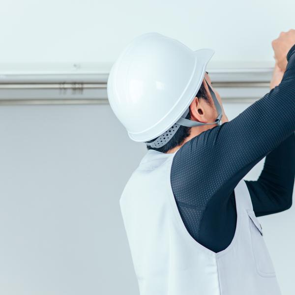

ホーム › 会社案内
会社案内
代表あいさつ

写真はイメージ(Adobe Stock)。
実際の制作では代表の写真が入ります。
そらまど工務店の二代目、
空窓 太一(架空)です。
父が始めたこの工務店で大工として20年、
現場に立ってきました。
リフォームの現場でいつも思うのは、
「もっと早く相談してもらえたら、
安く済んだのに」ということです。
水回りの傷みは、
見えないところで進みます。
だから当店は、
見積もりの前の
「これって直したほうがいいの?」
という段階のご相談を歓迎しています。
売り込みはしません。
地元で40年やってこられたのは、
それが一番の営業だと知っているからです。
会社概要
- 会社名
- そらまど工務店(架空)
- 代表
- 空窓 太一(架空)
- 創業
- 1986年(創業40年)
- 所在地
- 〒000-0000 ◯◯県◯◯市◯◯町1-2-3
- 電話
- 000-0000-0000(平日 8:30〜17:30)
- 建設業許可
- ◯◯県知事 許可(般-00)第00000号【サンプル表記】
- 事業内容
- 住宅リフォーム(水回り中心)・新築・修繕全般
- 施工エリア
- ◯◯市とその近隣(車で30分以内を目安)。
何かあれば当日中に伺える範囲だけで施工しています